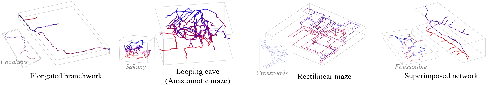

Axel Paris - PhD Student in Computer Graphics
Home
Publications
Resume
Email
Twitter
Synthesizing Geologically Coherent Cave Networks
September 25, 2021.

Preprint
PDF
Video
Code
Slides
Talk
We present a geologically-based method to generate complex karstic networks. Karsts are a type of
landscape formed by the dissolution of highly soluble rocks (generally limestones). In particular,
they are characterized by complex underground networks made of varieties of tunnels and breakout
chambers with stalagmites and stalactites. Our method computes skeletons of karstic networks by
using a gridless anisotropic shortest path algorithm according to field data of the underground
system (such as inlets and outlets), geomorphological features and parameters such as faults,
inception horizons, fractures, and permeability contrasts. From this skeleton, we define the geometry
of the conduits as a signed distance function construction tree combining primitives with blending
and warping operators. Our framework provides multiple levels of control, allowing us to author both
the structure of the karstic network and the geometric cross-section shapes and details of the generated conduits.
@article{Paris2021Karsts,
author = {Paris, Axel and Gu{\'e}rin, Eric and Peytavie, Adrien and Collon, Pauline and Galin, Eric},
title = {Synthesizing Geologically Coherent Cave Networks},
journal = {Computer Graphics Forum},
volume = {40},
number = {7},
year = {2021},
pages = {277--287}
}